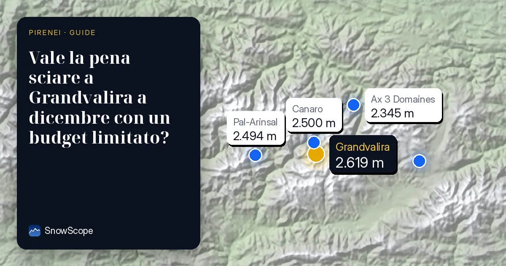

Vale la pena sciare a Grandvalira a dicembre con un budget limitato?
Andorra ha fama di sci economico: Grandvalira è quindi una buona scommessa per dicembre? Il nostro storico neve di 46 inverni passati (1980-81 - 2025-26) dice che la neve naturale in basso è scarsa per tutto il mese e che inizio dicembre è poco affidabile. Il viaggio vale la pena a fine dicembre, in quota, con lo skipass comprato online.
Le previsioni neve in tempo reale per Grandvalira nell'app SnowScopeAltezza neve, allerte powder e mappa 3D, gratis.
La promessa contro i numeri della neve
Grandvalira, in Andorra, è grande: l'area mappata ha 137 km di piste e 53 impianti tra 1.674 m e 2.619 m. Sembra rassicurante, finché non guardi la neve naturale per quota nel nostro storico. Alla base degli impianti, a 1.674 m, l'altezza abituale a dicembre è di 9 cm; un dicembre scarso, 1 inverno su 10, è vicino a 0 cm, e uno ricco supera i 28 cm.
A metà montagna, a 2.146 m, la neve abituale a dicembre è di 27 cm, variando da meno di 2 cm in un inverno scarso a oltre 63 cm in uno abbondante. In cima a 2.619 m, lo spessore abituale è di 45 cm, da meno di 5 cm in 1 inverno su 10 a oltre 101 cm in un inverno molto nevoso. Lo spessore abituale il 15 dicembre è di 8 cm alla base, 25 cm a metà montagna e 42 cm in cima.
Il 13 novembre, la stima della neve è di 0 cm a tutte e tre le quote, con 0 cm di neve fresca prevista nei prossimi 7 giorni alla base e a metà montagna, e 3 cm in cima. Le previsioni a due settimane fino al 26 novembre per la metà montagna e oltre sono tra 2 e 17 cm, con 10 cm in media, il che mostra un inizio di stagione lento.

Quale settimana di dicembre ti garantisce la neve
Le quote settimana per settimana mostrano perché l'inizio di dicembre è un rischio per uno sciatore prudente. Alla base (1.674 m), la neve raggiunge 30 cm o più solo nel 2 % degli inverni passati tra l'1 e il 7 dicembre, e nel 7 % in ciascuna delle tre settimane successive, mentre 50 cm o più non si verificano mai (0 %) per tutto il mese. A metà montagna (2.146 m), 30 cm o più si verificano nel 30 %, 41 %, 50 % e 65 % degli inverni passati in quelle quattro settimane.
La cima degli impianti a 2.619 m è dove dicembre diventa più affidabile in seguito. Dall'1 al 7 dicembre, 30 cm o più appaiono nel 43 % degli inverni passati e 50 cm o più nel 28 %. Dall'8 al 14 dicembre, queste quote salgono al 57 % e 39 %, poi al 63 % e 48 % dal 15 al 21 dicembre, e al 76 % e 63 % dal 22 al 28 dicembre.
Quanto costa davvero lo skipass
Per lunedì 14 dicembre 2026, il sito ufficiale di Grandvalira elenca un pass giornaliero per adulti (18-64) acquistato online a 62,50 EUR, mentre il prezzo in biglietteria per quel giorno è di 72,00 EUR. I prezzi variano in base alla data, quindi controllare in anticipo e acquistare online fa una chiara differenza. Altri costi di viaggio non sono stati verificati, quindi uno skipass più economico da solo non garantisce una vacanza a basso costo.
Grandvalira a confronto con Baqueira Beret
In Spagna, l'area sciistica di Baqueira Beret ha 154 km di piste e 36 impianti da 1.504 m a 2.600 m. Eppure Grandvalira ha una neve naturale abituale più profonda a dicembre su tutta la montagna. Lo spessore abituale di dicembre a Baqueira è di 8 cm alla base, 20 cm a metà montagna a 2.052 m e 30 cm in cima a 2.600 m. A metà montagna, Baqueira raggiunge 30 cm o più nel 22 %, 30 %, 35 % e 41 % degli inverni passati nelle quattro settimane di dicembre. In cima, raggiunge 30 cm o più nel 39 %, 46 %, 52 % e 59 % degli inverni, e 50 cm o più nel 13 %, 22 %, 30 % e 37 %.
Per la stagione 2026-27, il sito ufficiale di Baqueira Beret elenca un Baqueira Ticket giornaliero per adulti a 74,00 €, un pass giornaliero con la carta ricaricabile Baqueira Pass a 70,00 €, e un Baqueira Ticket da 6 giorni a 359,00 €. Il prezzo online di 62,50 EUR per Grandvalira il 14 dicembre è inferiore alle tariffe giornaliere di Baqueira Beret. Tuttavia, la tariffa in biglietteria di 72,00 EUR di Grandvalira si colloca nel mezzo, e i prezzi di Grandvalira cambiano in base alla data.
I recenti mesi di dicembre sono meno nevosi del passato
Confrontando i primi 15 inverni (1980-81 al 1994-95) con gli ultimi 15 (2011-12 al 2025-26), la media di metà dicembre è rimasta a 8 cm alla base, è passata da 21 cm a 25 cm a metà montagna, ed è salita da 35 cm a 41 cm in cima. Anche così, il dicembre dell'inverno scorso (2025-26) è stato inferiore a quella media recente, con 8 cm alla base, 19 cm a metà montagna e 32 cm in cima. Le oscillazioni anno dopo anno rimangono grandi: il 1989-90 è sceso a 1 cm sia a metà montagna che in cima, mentre il 1996-97 ha raggiunto 35 cm, 82 cm e 129 cm.
Consigli per sciatori
- Punta al periodo 22-28 dicembre se puoi, quando la cima a 2.619 m raggiunge 30 cm o più nel 76 % degli inverni passati e 50 cm o più nel 63 %.
- Pianifica la tua sciata tra 2.146 m e 2.619 m, perché la base a 1.674 m ha una media di soli 9 cm in un dicembre abituale.
- Prenota il tuo skipass sul sito ufficiale di Grandvalira per pagare 62,50 EUR invece di 72,00 EUR per il 14 dicembre, e controlla i prezzi per le tue date esatte.
- Controlla il bollettino valanghe prima di qualsiasi sci fuori pista, specialmente quando la copertura nevosa di inizio dicembre è sottile.
Altre mappe (siti esterni)
Riferimenti e crediti
- Grandvalira, official ski pass booking (online price for 14 December 2026, read 2026-11-13) www.grandvalira.com/en/ski-pass/day
- Baqueira Beret, official prices (tarifas), season 26-27 www.baqueira.es/es/tarifas
- SnowScope, December snow at three heights and today's snow map snowscope.app/
Su questi numeri
Numeri della neve: storico neve SnowScope, 46 inverni passati (1980-81 - 2025-26) a tre quote di ogni località (un modello del passato corretto per la quota: una stima per un'area, non misure della località); dati di dicembre calcolati dalle altezze giornaliere di quegli inverni. Neve attuale e tendenza a due settimane: previsioni SnowScope (tendenza da ECMWF e GFS, un intervallo, non una promessa). Impianti e piste: mappatura OpenSkiMap. Prezzi: le pagine ufficiali qui sotto, lette il 2026-11-13; i prezzi possono cambiare, verificare prima di prenotare.
Bollettini valanghe ufficiali: Servei Meteorològic Nacional d'Andorra – Estat de la neu
Cita questo articolo
Per ricerca, didattica o stampa: numeri e grafici sono liberamente riutilizzabili con licenza CC BY 4.0 citando così.
SnowScope (2026), Vale la pena sciare a Grandvalira a dicembre con un budget limitato?, https://snowscope.app/blog/it/2026/11/grandvalira-andorra-december-ski-snow-reality-cost-2026.html, consultato il 2026-11-14
SnowScope (Atlas Labs). (2026, November 14). Vale la pena sciare a Grandvalira a dicembre con un budget limitato?. SnowScope snow reports. https://snowscope.app/blog/it/2026/11/grandvalira-andorra-december-ski-snow-reality-cost-2026.html
BibTeX
@misc{snowscope2026grandvaliraandorradecemb,
author = {{SnowScope (Atlas Labs)}},
title = {Vale la pena sciare a Grandvalira a dicembre con un budget limitato?},
year = {2026},
month = nov,
howpublished = {\url{https://snowscope.app/blog/it/2026/11/grandvalira-andorra-december-ski-snow-reality-cost-2026.html}},
note = {Published 2026-11-14 13:29 UTC; accessed 2026-11-14}
}· CC BY 4.0 · Metodi, dati e strumenti →
Grandvalira: neve e temperatura per quota, quest'inverno vs lo scorso (strumenti) →
Segui Grandvalira
Gratis: un messaggio quando arriva la neve e il meteo ogni mattina.